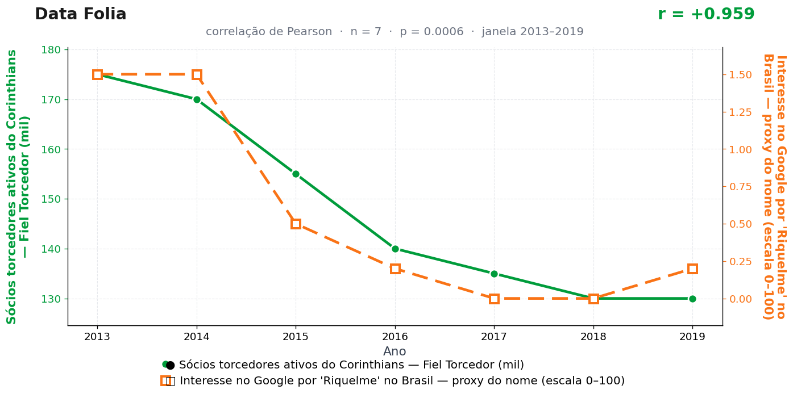

Post de 05/10/2026
A teoria
A adesão ao programa de torcida transforma torcedor em participante ativo do clube. Esse vínculo aumenta a demanda por memória, rivalidade e entender o futebol do continente.
Riquelme representa esse acervo. Seu nome concentra Libertadores, pausa, clássico argentino e a figura do camisa 10 que controla o tempo sem correr atrás dele.
Quando a Fiel se organiza, ela também organiza sua memória afetiva. O cadastro cresce, a curiosidade continental acompanha, e Riquelme entra como leitura obrigatória do corintiano sul-americano.
Riquelme encerrou a carreira em 2015 e não consta que o programa de sócios tenha sido formalmente notificado. A diretoria, procurada pelo nosso setor de checagem imaginária, preferiu tratar o assunto com o silêncio de um camisa 10 segurando a bola no meio-campo.
A teoria é ficção; a correlação é real: r = 0,96 (n = 7, p = 0,001).
Os dados por trás

- Sócios torcedores ativos do Corinthians — Fiel Torcedor (mil) — 7 pontos anuais, período 2013–2019. Fonte: Corinthians / imprensa esportiva.
- Interesse no Google por 'Riquelme' no Brasil — proxy do nome (escala 0–100) — 7 pontos anuais, período 2013–2019. Fonte: Google Trends (pytrends).
Como as correlações deste site são encontradas — e por que você não deve confiar nelas — está explicado na nossa metodologia.
Por que isso acontece?
São duas séries em queda por razões próprias e desconexas. Os sócios do Fiel Torcedor caem de 175 mil para 130 mil ao longo da janela — programas de sócio incham em anos de conquista e murcham depois. As buscas por "Riquelme" derretem porque o jogador saiu de cena: aposentou-se em 2015, e a série vai de 1,5 a praticamente zero. Duas curvas descendo em paralelo rendem r = 0,96 sem que exista qualquer fio entre elas.
É a tendência temporal comum em sua forma mais simples: cada série tem sua própria história de declínio, e o Pearson só enxerga que as duas apontam para baixo. Qualquer outra série decrescente do período — audiência de TV aberta, venda de CDs — daria resultado parecido contra qualquer uma das duas.
Com n = 7 e valores da série B espremidos entre 0 e 1,5 (pouquíssima variação real), o número exibido tem precisão de vitrine: muda-se um ano, muda-se a manchete. Amostra pequena não sustenta conclusão — sustenta piada, que é o nosso ramo.
Post de 05/10/2026 · publicado também no Instagram @datafolia.